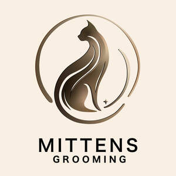
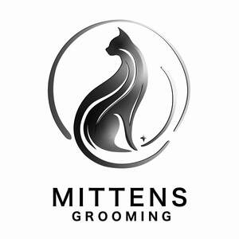

Trade Mark Journal No.2025/020 16 May 2025
UK00004195000 26 April 2025 (3,9,16,21,35,41,43,44)
Mark 1

Mark 2

- Class 3
- Non-medicated grooming products for pets; shampoos for pets; conditioners for pets; grooming sprays for pets; deodorising sprays for pets; cleaning preparations for pets; cleansing wipes for pets; perfumed sprays for pets; dry shampoos for pets; coat detanglers for pets; moisturising sprays and lotions for pet fur; paw cleaning products; fur cleaning preparations; grooming mousse; soaps for pets; non-medicated skin care preparations for pets.
- Class 9
- Downloadable software applications for scheduling pet grooming appointments; downloadable mobile applications for pet grooming services; downloadable electronic publications in the nature of manuals, guides, articles, and videos in the field of pet grooming, cat grooming, and pet care; downloadable multimedia files containing pet grooming instructional materials; downloadable e-books in the field of pet grooming and pet wellness; software for managing pet care services and appointments; mobile apps for communication between pet owners and grooming service providers.
- Class 16
- Printed materials, namely, manuals, guidebooks, handbooks, brochures, posters, leaflets, flyers, newsletters, educational materials, magazines, and books in the field of pet grooming, cat grooming, pet hygiene, pet wellness, and pet care; printed training materials in the field of pet grooming; stationery; notebooks; diaries; planners; calendars related to pet care and pet grooming.
- Class 21
- Pet grooming tools and accessories, namely brushes, combs, grooming gloves, deshedding tools, grooming mitts, nail clippers, shampoo brushes, fur massagers, pet bathing tools, pet grooming sponges, pet cleaning cloths, and hand-held grooming devices; pet feeding bowls; pet water dispensers; grooming kits for pets consisting of grooming implements.
- Class 35
- Retail services and online retail services connected with the sale of pet grooming products, non-medicated grooming preparations, shampoos, conditioners, grooming sprays, grooming tools, pet brushes, combs, grooming gloves, nail clippers, pet care accessories, pet cleaning products, pet feeding bowls, pet furniture, and pet accessories; business consultancy and advisory services relating to the operation of pet grooming businesses; advertising, marketing, and promotional services for pet grooming and pet care services; providing online marketplaces for buyers and sellers of pet-related products and services.
- Class 41
- Educational services, namely providing online and in-person training, courses, webinars, workshops, seminars, tutorials, and coaching services in the field of pet grooming, cat grooming, pet hygiene, pet wellness, pet care, and pet styling; development and dissemination of educational materials of others in the field of pet grooming and pet care; organisation of competitions, exhibitions, and award ceremonies in the field of pet grooming and pet care.
- Class 43
- Pet boarding services; pet daycare services; provision of temporary accommodation for pets; rental of facilities for pet lodging; cat hotel services; consultancy and advisory services relating to the temporary accommodation of pets.
- Class 44
- Mobile pet grooming services; grooming services for cats, including bathing, brushing, haircutting, hair trimming, de-shedding treatments, mat removal, nail clipping, paw cleaning, flea treatments, ear cleaning, sanitary trimming, coat maintenance, styling and shaping of cat fur; mobile veterinary grooming assistance services; advice and consultation services relating to pet grooming, coat care, and hygiene; providing stress-free pet grooming services at the client’s location via a mobile grooming salon; wellness checks during grooming sessions, including skin condition evaluation and coat health advice.
Mrs Greta Bernotaviciene